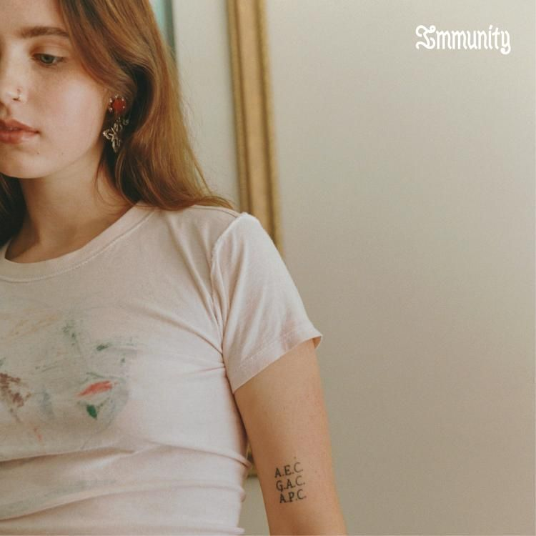

Descripción
"Immunity" explora temas de vulnerabilidad, autodescubrimiento y crecimiento personal. El álbum muestra la evolución de Clairo como artista, yendo más allá de su sonido de dormitorio-fi-pop y profundizando en una composición más introspectiva y madura. La letra toca temas como la soledad, las complejidades de las relaciones y los desafíos de vivir con artritis reumatoide. "Immunity" es un álbum muy vulnerable y acogedor que invita a los oyentes al viaje emocional de Clairo.
Este álbum contiene 11 canciones.